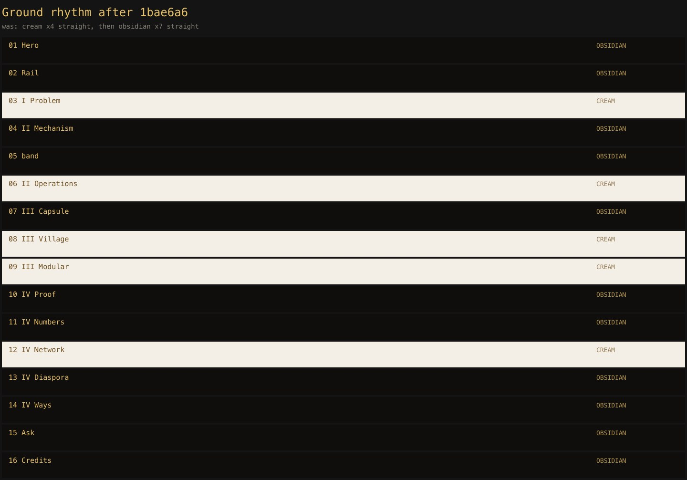
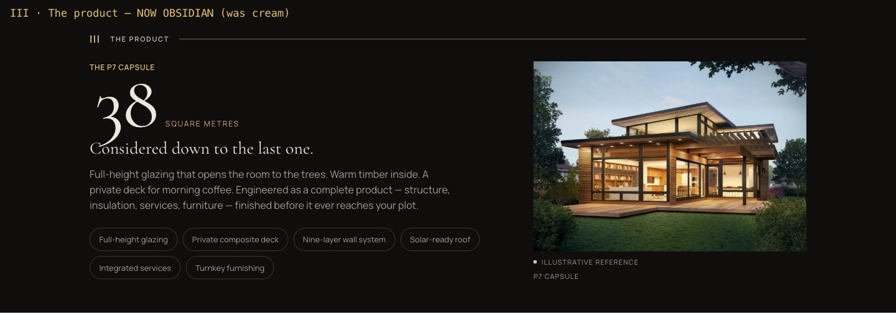
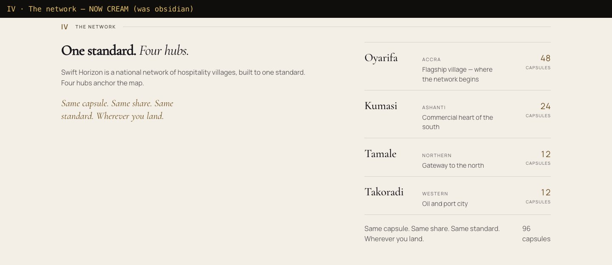

Ground rebalance — before / after
The homepage ran four consecutive cream sections and then seven consecutive
obsidian ones, so the ground never alternated. Two tone flips fixed it.
1bae6a6 · fix(marketing): alternate the section grounds
src/assets/styles/marketing.css +18 −1 · added five ground-agnostic
src/components/marketing/home/CapsuleSection.astro +7 −7 · tone canvas → obsidian
src/components/marketing/home/NetworkSection.astro +8 −8 · tone obsidian → canvas
--surface-* aliasessrc/components/marketing/home/CapsuleSection.astro +7 −7 · tone canvas → obsidian
src/components/marketing/home/NetworkSection.astro +8 −8 · tone obsidian → canvas
The rhythm
Was: cream ×4 straight, then obsidian ×7 straight. Now it alternates.

III · The product — cream → obsidian
Before — cream ground
 Open → 07-III-capsule.jpg
Open → 07-III-capsule.jpg
After — obsidian ground

Open → after-07-III-capsule.jpg
IV · The network — obsidian → cream
Before — obsidian ground
 Open → 12-IV-network.jpg
Open → 12-IV-network.jpg
After — cream ground

Open → after-12-IV-network.jpg
Why it needed more than a tone flip
SectionShell's tone prop only sets background and
inherited color. Both components hardcoded one ground's own tokens, so
flipping alone would have left dark text on a dark ground. The five aliases make
tone truthful.
| Was hardcoded | Now | Resolves to |
|---|---|---|
| --ground-ink-on-canvas | --surface-ink | per surface |
| --ground-ink-dim-on-canvas | --surface-ink-dim | per surface |
| --ground-gold-on-canvas | --surface-gold | per surface |
| --ground-rule | --surface-rule | per surface |
| rgb(20 20 26 / .18) | --surface-hairline | per surface |
Verification
| Check | Result |
|---|---|
| Built HTML | Capsule → marketing-surface-dark · Network → marketing-surface-canvas |
| WCAG AA, alpha composited | 19 / 19 pairs pass · lowest 5.97:1 |
| Marketing tests | 42 pass (contrast 18, css-contract 6, foundation 7, copy-guard 11) |
| Light-mode toggle | resolves identically — aliases are custom properties, unaffected |
| 390px mobile | both sections legible, pills + hairlines + bronze correct |
| Tail rhythm | still 4 obsidian in a row (Diaspora, Ways, Ask, Credits) |
| Capsule numeral spacing | pre-existing — “38” sits tight on the title (line-height 0.82) |